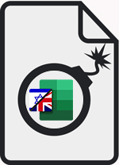
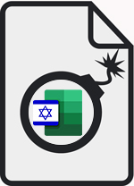

ערכת הכלים האולטימטיבית
אופן השימוש
הורדה
רשימת שינויים
הורדה
גרסה אלטרנטיבית לשיפור הביצועים

גרסה 1.3 (English)
הורדה

גרסה 1.3 (עברית)
הורדה
חזרה
גלו עוד על 'המשיכו לדבר ואף אחד לא יתפוצץ' בכתובת
www.keeptalkinggame.com